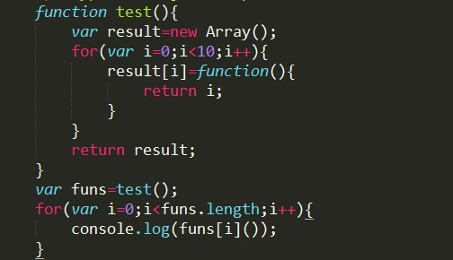
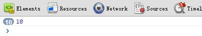
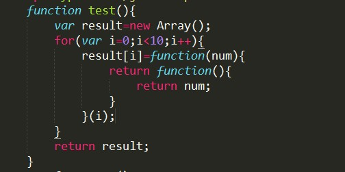

关于js的闭包
——发表于2012/10/13
js的闭包，每次看，看完后过几天又忘了，理解不够深刻，所以决定按照自己的理解写下来
1)关于上下文
活动的执行上下文组在逻辑上组成一个堆栈。堆栈底部永远都是全局上下文(global context)，而顶部就是当前(活动的)执行上下文。
2）关于函数
函数上下文的作用域链在函数调用时创建的，包含活动对象和这个函数内部的[[scope]]属性。
3）关于[[scope]]
[[scope]]在函数创建时被存储－－静态（不变的），永远永远，直至函数销毁（这就是闭包关于内存缺点的症结所在）。即：函数可以永不调用，但[[scope]]属性已经写入，并存储在函数对象中。
函数刚开始创建的时候就有[[scope]]属性了，并且还没被调用时，里面就存放在全局变量对象（一般情况下会放全局变量对象和当前自己活动对象，闭包的话会存放全局变量对象和包含它的外部函数活动对象和当前活动自己对象）
闭包与函数的[[scope]]直接相关
一般来讲的话，函数执行完毕后，局部活动对象会被销毁，内存中仅仅保存全局作用域（全局变量对象）
闭包的不同：闭包是在一个函数中创建另一个函数，所以闭包是在其包含它的外部函数被调用时创建的，所以闭包创建时它的[[scope]]属性就会把当前外部函数的活动对象给包含在闭包自己的作用域里，即使在后来外部函数执行完毕了，但是其活动对象比没有像一般情况那样被销毁
比如闭包与变量的例子：

连续输出10个10

这是因为test()在调用完之后所留下的活动对象中，i的值保留的是循环最后一次的值，即10而funs[i]调用闭包时，里面的return i;i用到的就是闭包作用域里面外部函数活动对象所留下的i的值
修正方法：

修正原理：
没有修正的时候，for循环里面的闭包都共用同一个上层活动对象，即函数test的活动对象；
修正后的呢，闭包中再放一个闭包，且外层闭包在创建之后马上自执行，内层闭包的上层活动对象为外层闭包，所以内层闭包保存的是外层闭包的作用域，每个外层闭包自执行后的活动对象都是独立的。共用与独立，，这就是修正的区别与效果，修正后闭包不会共用同一个上层活动对象了。。。
闭包的优点：
①减少全局变量污染
闭包可以用到外部函数的变量，这样就可以不定义全局变量了
②保护函数内部变量的安全
其实原理跟第一点差不多，只有闭包能访问到其外部函数的内部变量
闭包的缺点：
由于闭包会携带包含它的函数的作用域，因此会比其他函数占用更多的内存。过度使用闭包可能会导致内存占用过多（并且，闭包应用包含函数的整个活动对象会一直存在无法被销毁，会在某些浏览器导致内存泄露问题）